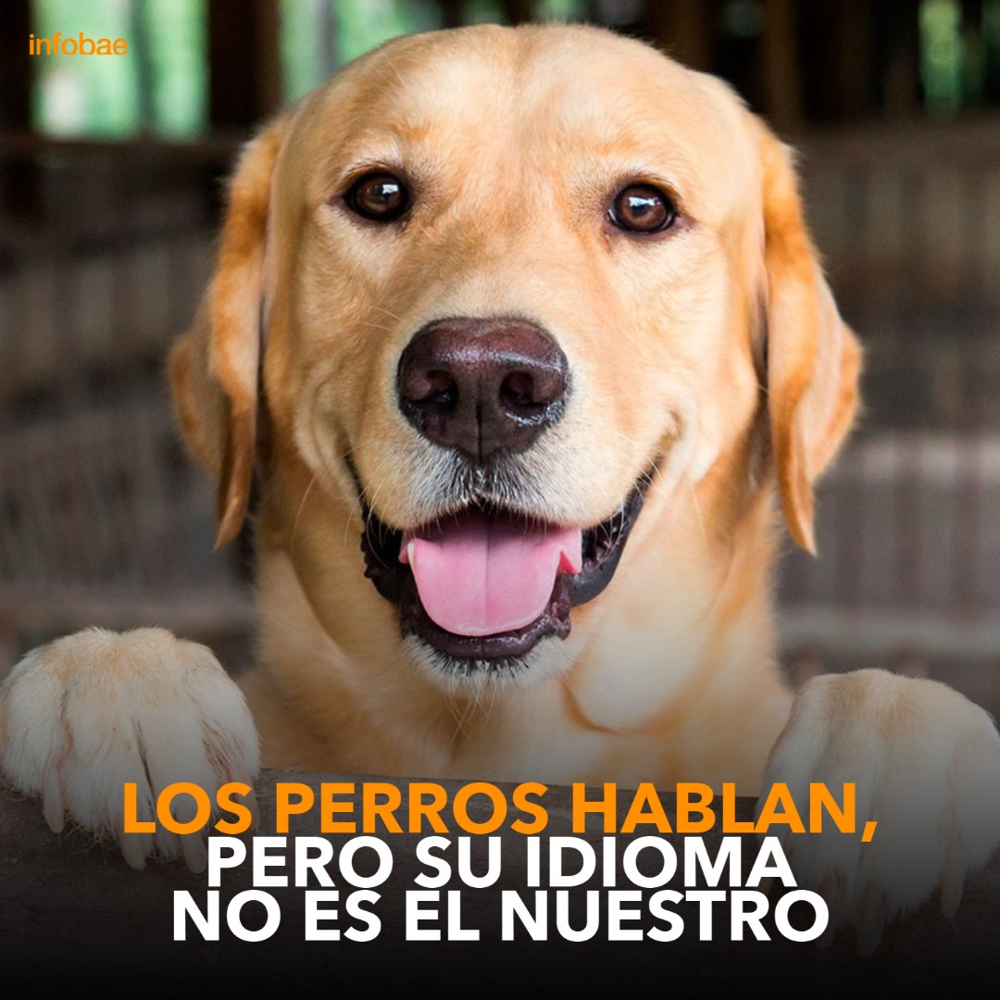

Razas para compartir en familia


¿Los perros hablan y se comunican con los humanos?

Cuando mueven la cola o las orejas se están expresando a través del cuerpo. Pero también emiten voces y esa comunicación tiene que ver con el famoso ladrido. El Dr Juan Enrique Romero nos explica como se comunican nuestros perros.